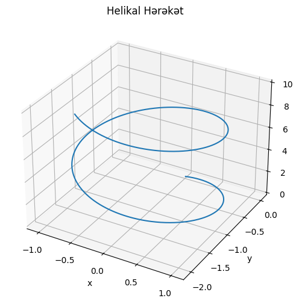
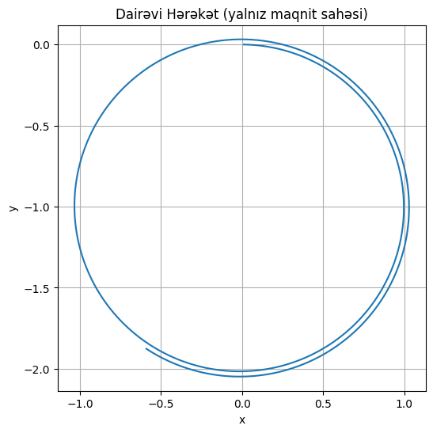
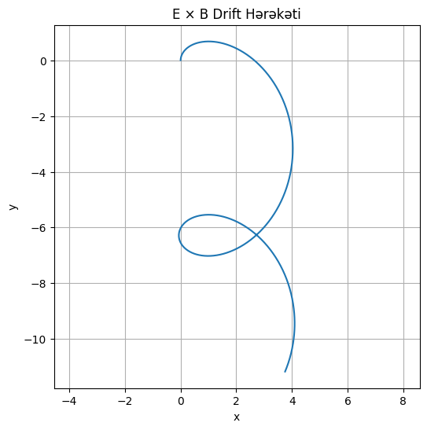

🧲 Problem 1: Simulating the Effects of the Lorentz Force
📘 Motivation
The Lorentz force describes how charged particles move under the influence of electric and magnetic fields. It is given by the equation:
This principle is foundational in:
- ⚡ Plasma confinement
- 🚀 Particle accelerators
- 🔬 Mass spectrometry
- 🌌 Astrophysical plasmas
Understanding Lorentz force through simulation allows us to visualize the motion of particles and gain insights into complex physical systems.
🎯 Task Overview
You will simulate the motion of a charged particle under various electric and magnetic field configurations and explore how different parameters affect its trajectory.
🔍 Step 1: Exploration of Applications
Systems influenced by the Lorentz force:
- Cyclotrons and synchrotrons: use magnetic fields to bend and accelerate particles.
- Mass spectrometers: separate ions based on charge-to-mass ratio.
- Magnetic confinement in fusion devices (e.g., Tokamaks) to trap plasma.
Electric fields accelerate particles, while magnetic fields curve their paths. The combination leads to complex trajectories.
🧮 Step 2: Equation of Motion
The Newton’s second law with the Lorentz force is:
We will solve this using a numerical integration method, such as Euler or Runge-Kutta, to track the particle’s position over time.
💻 Step 3: Python Simulation
🔧 Basic Configuration
import numpy as np
import matplotlib.pyplot as plt
from mpl_toolkits.mplot3d import Axes3D
# Physical parameters
q = 1.0 # Charge
m = 1.0 # Mass
B = np.array([0, 0, 1]) # Magnetic field (uniform along z-axis)
E = np.array([0, 0, 0]) # Electric field (can be changed)
v0 = np.array([1, 0, 0]) # Initial velocity
r0 = np.array([0, 0, 0]) # Initial position
dt = 0.01
steps = 1000

🔁 Euler Integration
def lorentz_force(q, v, E, B):
return q * (E + np.cross(v, B))
r = [r0]
v = v0
for _ in range(steps):
a = lorentz_force(q, v, E, B) / m
v = v + a * dt
r_new = r[-1] + v * dt
r.append(r_new)
r = np.array(r)
📊 Step 4: Visualization
3D Trajectory Plot
fig = plt.figure(figsize=(10, 6))
ax = fig.add_subplot(111, projection='3d')
ax.plot(r[:,0], r[:,1], r[:,2])
ax.set_title("Trajectory of Charged Particle")
ax.set_xlabel("x")
ax.set_ylabel("y")
ax.set_zlabel("z")
plt.show()
You can modify the values of
E,B,v0to observe:
- Circular motion (only magnetic field, velocity ⊥ B)
- Helical motion (magnetic field + velocity at an angle)
- Drift motion (crossed E and B fields)

🎛️ Step 5: Parameter Exploration
Allow variation in:
- Electric field
E = [Ex, Ey, Ez] - Magnetic field
B = [Bx, By, Bz] - Initial velocity
v0 - Particle charge
qand massm
Observe:
- The Larmor radius:
$$ r_L = \frac{mv_\perp}{|q||B|} $$
- The gyrofrequency:
$$ \omega_c = \frac{|q||B|}{m} $$
- The drift velocity in crossed fields:
$$ \vec{v}_d = \frac{\vec{E} \times \vec{B}}{B^2} $$ 
📦 Deliverables
- ✅ Python notebook (e.g., Google Colab) implementing the simulations
- ✅ Interactive 2D/3D plots of trajectories under different conditions
- ✅ Analysis of how parameters affect motion
- ✅ Physical interpretation of results (e.g., helical or drift motion)
- ✅ Extensions to more complex fields (non-uniform, time-varying)
🧠 Discussion
- Cyclotron motion arises when velocity is perpendicular to magnetic field.
- Helical motion appears when there’s a velocity component along the field.
- E × B drift causes constant drift motion without acceleration.
- These principles are essential in plasma confinement and ion manipulation.
🔄 Extensions
- Simulate time-varying electric or magnetic fields.
- Add collisions or friction to simulate plasma behavior.
- Explore relativistic corrections for high-speed particles.
🛠️ Notes & Tips:
- Use
scipy.integrate.solve_ivp()for more accurate RK4 solutions. - Visualize velocity and acceleration vectors for better insight.
- Adjust timestep
dtto ensure numerical stability.